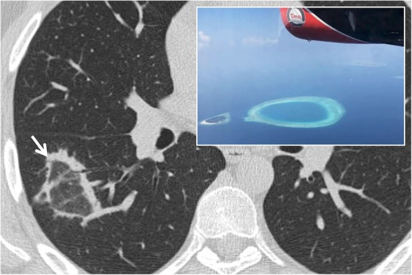
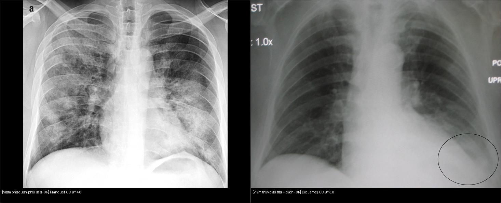
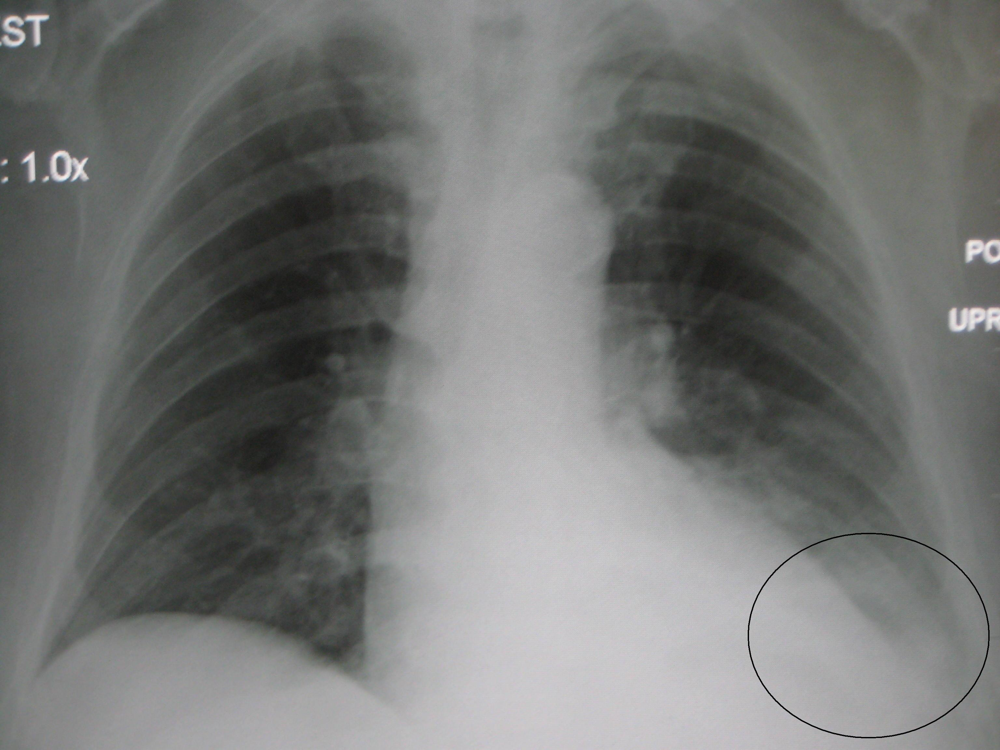
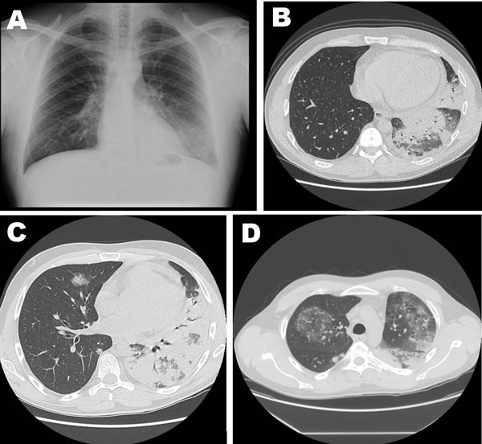

031 — Viêm phổi theo mẫu hình / Pneumonia patterns
Tags: pattern:dong-dac vung:phoi
Mức chắc chắn (certainty): tổng hợp y văn (literature synthesis) — nhóm tự biên từ y văn mở, chưa gắn ca nguyên văn đơn lẻ.
1. Tổng quan — 3 con đường viêm vào phổi (đơn vị giải phẫu khác nhau)
- Viêm thùy (lobar — đơn vị: phế nang): vi khuẩn lấp đầy phế nang theo đường lỗ Kohn — mờ đều 1 thùy/đoạn + phế quản hơi, giới hạn bởi rãnh liên thùy (điển hình phế cầu (pneumococcus)).
- Viêm phế quản-phổi (bronchopneumonia — đơn vị: tiểu phế quản trung tâm tiểu thùy): viêm quanh tiểu phế quản lan ra nang kề — nốt trung tâm tiểu thùy (centrilobular) + cây nụ (tree-in-bud) + kính mờ loang lổ (tụ cầu (staph), gram âm (Pseudomonas), hít (aspiration), lao).
- Viêm kẽ (interstitial — đơn vị: vách liên tiểu thùy): dày vách + kính mờ lan tỏa — lưới-nốt, Kerley, không phế quản hơi điển hình (virus, Pneumocystis, phù — nối bài 033).
- TẠI SAO phân 3 mẫu: gợi tác nhân (thùy→phế cầu; trung tâm tiểu thùy→lao/vi khuẩn hít; kẽ→virus/Pneumocystis) + tiên lượng biến chứng (áp xe (abscess), tràn mủ (empyema) ở bài 040).
Halo sign vs reversed halo (atoll) sign
- Halo (quầng): nốt đặc + quầng kính mờ quanh — xuất huyết quanh nốt: Aspergillus ở BN giảm bạch cầu (neutropenia) kinh điển; hoặc lan lepidic của adenocarcinoma (tồn tại dai dẳng, không tan).
- Reversed halo / atoll (vành ngược): kính mờ trung tâm + vành đông đặc ≥ 3/4 chu vi, dày ≥ 2 mm — đầu tiên nghĩ viêm phổi tổ chức hóa (COP/BOOP); vành nốt sần → lao/sarcoid; vành lưới → nấm xâm lấn (suy giảm miễn dịch) hoặc nhồi máu (miễn dịch thường).

Vành ngược (mũi tên) + hình đảo san hô đối chiếu. Nguồn: Chiarenza et al., Insights into Imaging 2019 Fig. 4, CC BY 4.0.
Trái: viêm phế quản-phổi đa ổ (Franquet, CC BY 4.0). Phải: viêm thùy dưới trái + dịch (Doc James, CC BY 3.0). Ảnh ghép letterbox.2. Gamut theo mẫu + bối cảnh
- Mờ thùy + phế quản hơi + sốt cấp: viêm thùy điển hình; phân biệt nhồi máu (đau ngực màng phổi, đờm máu), xuất huyết.
- Đa ổ 2 bên + hang (cavitation): tụ cầu huyết khối (septic emboli), lao, nấm — tìm ổ nhiễm ngoài phổi.
- Đông đặc không tan 6–8 tuần: ung thư dạng viêm, lao, viêm tổ chức hóa (organizing pneumonia).
- Kính mờ lan tỏa + suy hô hấp: virus, Pneumocystis (quanh rốn, đỉnh ít), phù (bài 033), xuất huyết lan tỏa.
3. Bảng so sánh phân biệt
| Thực thể (entity) | Hình ảnh điển hình | Chốt vào (rule-in) | Chốt loại (rule-out) | Gợi ý xác nhận |
|---|---|---|---|---|
| Viêm thùy (lobar) | Mờ đều 1 thùy + phế quản hơi, giới hạn rãnh | Phế quản hơi + sốt cấp + bạch cầu tăng | Kéo lệch thể tích → xẹp kèm (bài 030) | Kháng sinh theo phác đồ, CT lại nếu không tan |
| Viêm phế quản-phổi | Nốt/đám đa ổ 2 bên, dày thành phế quản | Đa ổ + đờm mủ + yếu tố hít/nằm lâu | Mờ đều 1 thùy đơn độc → nghĩ thùy hơn | Cấy đờm/máu, điều chỉnh kháng sinh |
| Áp xe phổi (abscess) | Hang có mức khí-dịch, thành dày | Mức khí-dịch trong hang + sốt hôi miệng | Hang khô không mức + thành mỏng → lao/nấm cũ | CT, dẫn lưu nếu lớn |
| Lao tiến triển | Hang thùy trên + nốt cây nụ (tree-in-bud) + hạch | Tree-in-bud + hang trên + tiếp xúc | Tan nhanh sau kháng sinh thường → vi khuẩn | AFB/PCR, cách ly |
4. Protocol
- X-quang đứng PA + nghiêng: đủ cho viêm cộng đồng; nghiêng định vị thùy (mất bờ tim/vòm hoành).
- CT: biến chứng (hang, empyema), không tan, suy giảm miễn dịch, tìm ổ thuyên tắc nhiễm khuẩn.
- Theo dõi: mờ không tan sau 6–8 tuần → chụp lại + soi/sinh thiết loại trừ ác tính (nhất là người hút thuốc).
5. Cạm bẫy
- Viêm thùy dưới phải + mất vòm hoành dễ đọc nhầm tràn dịch — tìm phế quản hơi và meniscus (bài 040).
- Viêm đỉnh sau xương đòn dễ bỏ sót — so 2 đỉnh + phim cũ.
- Ăn sặc thầm (silent aspiration) người già: đa ổ đáy, tái đi tái lại — hỏi nuốt, đánh giá thần kinh.
6. Tự lượng giá — Blind Quiz
Ca 1 — Sốt + ho đờm mủ. Nhìn phim, mô tả trước.

- Hỏi: thùy nào? Có dịch kèm không? Mẫu thùy hay đa ổ?
Bấm để hiện đáp án
- Viêm thùy dưới trái + tràn dịch ít cùng bên (viêm cạnh màng phổi). Phế quản hơi trong vùng mờ, không mất thể tích → không phải xẹp thuần.
- Nguồn: Doc James, CC BY 3.0.
Ca 2 — BN suy giảm miễn dịch, khó thở tăng dần:

Bấm để hiện đáp án
- Viêm phổi Legionella nặng: đông đặc thùy + phế quản hơi + kính mờ lan rộng + dịch ít — mẫu hỗn hợp, tiến triển nhanh sang ARDS (nối bài 033).
- Nguồn: CDC, public domain.
Bài liên quan chéo
- 001 – Tổng quan hệ Ngực
- 030 – Đông đặc – xẹp phổi (cơ chế lấp đầy)
- 033 – Phù phổi & ARDS (kính mờ lan tỏa)
- 040 – Tràn dịch màng phổi (tràn mủ cạnh viêm)
Không dùng để chẩn đoán độc lập khi chưa có người hướng dẫn.